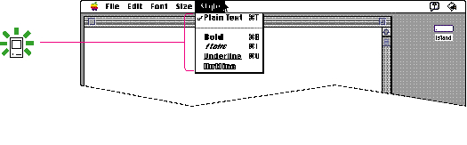
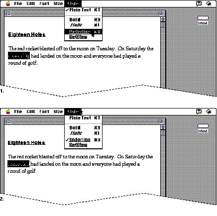
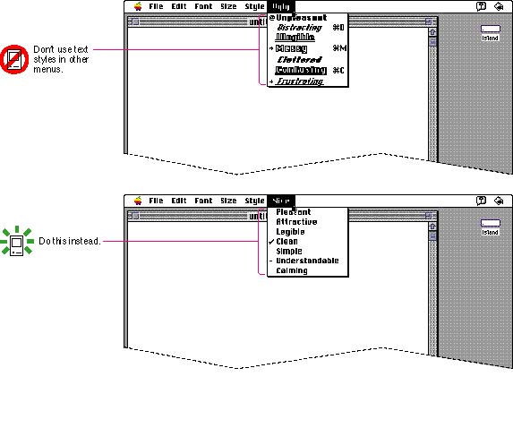

|
Text Styles in MenusYou can use text styles in a Style menu to indicate the effect of choosing a certain text attribute. This use is only appropriate in Style menus. Figure 4-27 shows an appropriate Style menu. Outline style is also used in the Size menu to indicate installed sizes of bitmapped fonts and all sizes of TrueType fonts that are available.Figure 4-27 A Style menu with text styles  Use the standard wording for style items. These items are one type of toggled menu item. With this type of toggled menu item, the first time the user chooses the item, it sets the selected object to that attribute. The second time the user chooses the item with the same object selected, the effect is reversed. See the discussion of toggled menu items in the next section, "Toggled Menu Items," for more information. Figure 4-28 shows the effect of choosing a style menu item. Figure 4-28 The effects of the two states of a Style menu item  |
|
|
Don't use text styles to indicate additional information,
not style related, about menu items. This technique may
distract and confuse your users. It may also disrupt the visual clarity of the interface. Don't use both arbitrary marks and text styles to try to pack your menus with meaningful information. Use plain 12-point Chicago for menu commands on an unlocalized Roman system and add standard marks only where they belong. (Use keyboard equivalents on only the most often used items and follow the guidelines in the section "Keyboard Equivalents" on page 100 for assigning them.) Figure 4-29 shows an extreme example of an overburdened menu and an appropriate standard menu. For more information about providing text style choices, see the section "The Style Menu," which begins on page 97. |
|
Figure 4-29 A menu with nonstandard marks and
extraneous text styles and a menu all in plain text style
 |